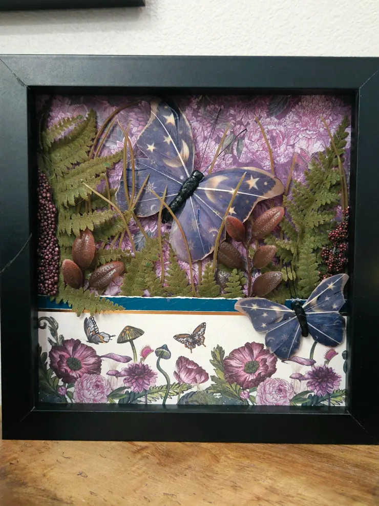
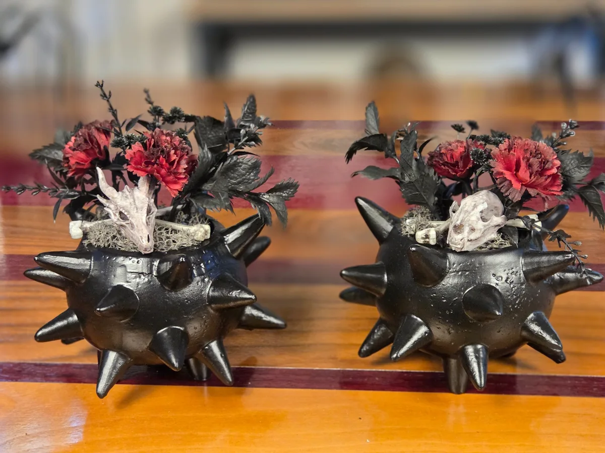
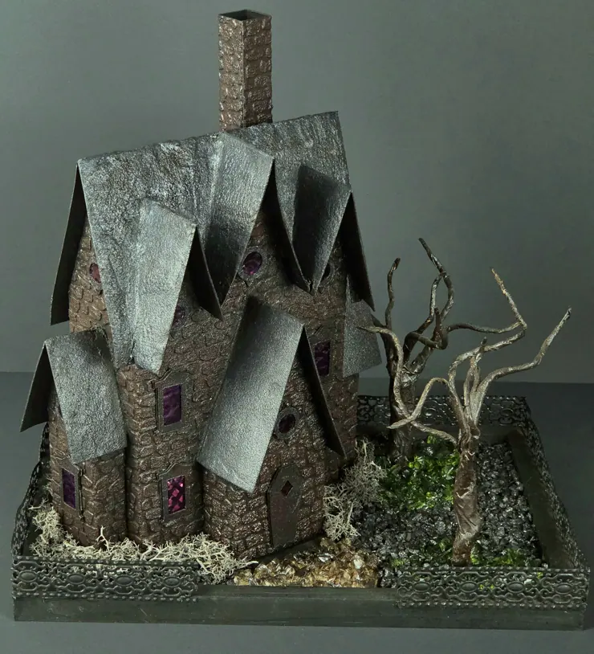
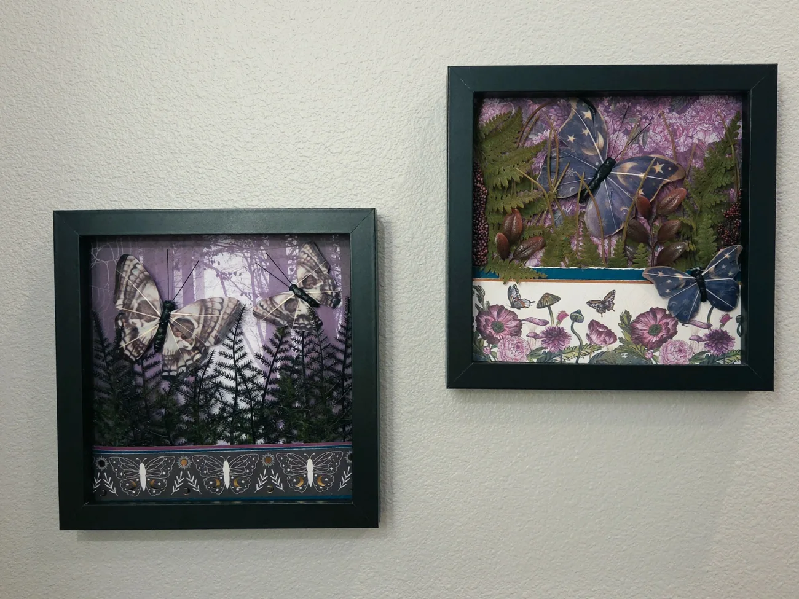

Completed creations · The Blackthorn Hollow village
☽ ✦ ☾
A Very Blackthorn Creepmas
Not every holiday village glows with cheerful tidings. In Blackthorn Hollow, crooked rooftops, candlelit windows, and restless shadows welcome those who prefer their seasonal magic a little darker.
An illuminated handmade haunted house with a miniature cemetery, twisted trees, and an overgrown gothic landscape. Property No. 001 of Blackthorn Hollow.
A handmade gothic cemetery cottage with a twisted tree and a lone grave. A forgotten corner of Blackthorn Hollow, ready to join your miniature village.
Miniature holiday village nostalgia meets gothic architecture and cemetery gardens. These Creepmas-inspired houses belong to Blackthorn Hollow—a village that slips between realities, where time behaves strangely and visitors cannot deliberately find their way back.
Still in the cabinet · Available on Etsy
Curiosities Awaiting a Home
Explore these handmade creations, each with its own little story.

✦ Still for sale
Celestial Butterfly Shadow Box
A little piece of the night sky, framed in a beautifully curious world.
An illuminated handmade haunted house with a miniature cemetery, twisted trees, and an overgrown gothic landscape. Property No. 001 of Blackthorn Hollow.
A handmade gothic cemetery cottage with a twisted tree and a lone grave. A forgotten corner of Blackthorn Hollow, ready to join your miniature village.
A hand-painted dragon skull rests among dark flowers, moss, crystals, and stones in a wooden vessel. A Bone Garden for lovers of gothic fantasy and haunting stories.
Midnight Prowl is a feline-inspired Bone Garden featuring a hand-painted saber-toothed cat skull replica, real crystals, and dark botanicals arranged in a textured black bowl.
An ivory-toned dragon skull rests among burgundy faux succulents, black botanical stems, and tangled moss—all gathered inside a distressed gold-toned bowl.
Each creation has a story. Wander through the cabinet and discover the handmade, the haunted, and the wonderfully unusual.

COLLECTION 01
The Bone Garden
Bones, botanicals, and beautiful little relics.
Explore photo gallery →
COLLECTION 02
Curios Under Glass
Strange little discoveries, gathered beneath glass.
Explore photo gallery →
COLLECTION 03
The Haunted Atelier
Statement lampshades for beautifully unconventional spaces.
Explore photo gallery →

COLLECTION 04
Haunted Habitations
Hand-built houses with stories in every shadow.
Explore photo gallery →
COLLECTION 05
The Midnight Conservatory
Dark florals, skulls, and arrangements with a twist.
Explore photo gallery →

COLLECTION 06
The Nocturnal Gallery
Framed curiosities, celestial specimens, and miniature worlds inspired by nature’s darker beauty.
Explore photo gallery →
Meet the maker
Made by hand. Made to intrigue.
Oddities by Aimee is a creative workshop devoted to the unusual, the ornate, and the wonderfully strange. Each piece is crafted with thoughtful details, a little darkness, and plenty of imagination.
From haunted miniature houses to gothic lampshades and botanical curiosities, these are pieces made for people who love their homes a little stranger.
Correspondence welcome
Have a Curious Question?
Spotted something in my Curiosity Cabinet that isn’t currently available in my Etsy shop? Many of my creations are one of a kind, but I welcome commission inquiries! Whether you’re hoping for a piece inspired by a past creation or have a curious idea of your own, contact me and let’s see what we can dream up.
Meet The Violet Watcher, a curious little inhabitant of the Curios Under Glass collection by Oddities by Aimee.
This eye-mushroom display pairs an iridescent teal-and-purple cap with a vivid blue eye and a violet stem. Nestled among layered moss and dark, spiky botanicals, it brings a little enchanted-forest strangeness to your bookshelf, desk, mantel, or cabinet of curiosities.
A clear glass dome rests over the scene on a round wooden base, framing your unusual woodland companion from every angle. Display it among your favorite oddities, tuck it into a dark academia reading nook, or give it to someone who appreciates the beautifully peculiar.
Strange little discoveries, gathered beneath glass.
An illuminated handmade haunted house with a miniature cemetery, twisted trees, and an overgrown gothic landscape. Property No. 001 of Blackthorn Hollow.
Deep within the forgotten village of Blackthorn Hollow stands Harrowmere Manor, an imposing estate surrounded by twisted, lifeless trees and the graves of generations long past.
In the winter of 1893, the entire Harrowmere family vanished without explanation. Their belongings remained undisturbed, and no evidence of their departure was ever discovered.
More than a century later, travelers who stumble upon the elusive village report flickering lights in the manor’s windows and shadowy figures wandering its cemetery.
The locals insist the estate has been abandoned for generations.
A handmade gothic cemetery cottage with a twisted tree and a lone grave. A forgotten corner of Blackthorn Hollow, ready to join your miniature village.
At the edge of Blackthorn Hollow’s old burial ground stands Mournwick’s Cottage, once home to Elias Mournwick, the village sexton and caretaker of the dead.
In the winter of 1889, villagers began hearing bells ringing from the cemetery after midnight—though no bell had stood there for years. Soon afterward, graves were discovered with their soil pushed upward from beneath.
On January 14, 1890, Elias vanished.
His cottage was found undisturbed, his coat still hanging beside the door. His burial ledger lay open on the kitchen table, every page after January 13 mysteriously torn away.
No trace of Elias was ever found.
Yet on certain winter nights, a solitary lantern is still said to wander between the graves.
And the twisted tree beside the cottage sometimes moves when there is no wind.
A hand-painted dragon skull rests among dark flowers, moss, crystals, and stones in a wooden vessel. A Bone Garden for lovers of gothic fantasy and haunting stories.
Bound by magic and devotion, a great dragon kept vigil at its human rider’s grave for centuries. When its final breath faded, crimson roses, dark flowers, and strange crystals grew among its bones.
Some say the mournful wind is the dragon still calling to its beloved. But on certain moonless nights, two shadows rise together above the valley—one bearing wings, the other seated upon its back.
Long ago, a white unicorn guarded an ancient enchanted forest. When a terrible darkness crept through the woodland, poisoning its roots and silencing its creatures, the unicorn sacrificed the last of its magic to save the forest it loved.
Where the creature fell, crimson roses bloomed among its ivory bones, black flowers turned toward the moon, and amethyst crystals formed from the remnants of its fading enchantment.
Centuries passed, and the forest flourished once more. Yet the flowers surrounding its fallen guardian never withered.
Some say the forest still remembers.
For though the unicorn’s heart has long since fallen silent, something beneath the roses continues to beat.
The skull and wooden vessel from the sideOverhead view of the botanical arrangementUnicorn skull and crimson rose detailFlowers, foliage, and fantasy bonesFrom the workshop: skull and bones before arranging
Midnight Prowl is a feline-inspired Bone Garden featuring a hand-painted saber-toothed cat skull replica, real crystals, and dark botanicals arranged in a textured black bowl.
Some hunters belong to the night—even after their last prowl.
Imagine a quiet clearing where an ancient hunter once walked. Ivory-toned bones emerge from tangled moss, purple crystal points rise between black leaves, and burgundy faux succulents bring color to the shadows. The hunt has ended, but something wild remains.
All skulls and bones are replicas; no real animal bones are used. This decorative arrangement contains no living plants.
The complete Midnight Prowl Bone GardenAn alternate view of the skull and dark botanicalsThe arrangement from behindSaber-toothed cat skull replica and crystal detailsAn overhead view of the arrangementBurgundy botanicals, replica bones, and crystalsFrom the workshop: building the moss-covered base
An ivory-toned dragon skull rests among burgundy faux succulents, black botanical stems, and tangled moss—all gathered inside a distressed gold-toned bowl.
The Gilded Remains imagines a forgotten dragon’s resting place, where dark foliage rises between scattered bones and real clear and purple crystals catch the light.
Perhaps it was once a treasure hoard. Perhaps the garden itself is what remains of the treasure.
All skulls and bones are replicas; no real animal bones are used. This decorative arrangement contains no living plants.
The complete Gilded Remains Bone GardenAn alternate view of the dragon skull and gold-toned bowlA side view of the fluted vessel and botanicalsAn overhead view of the arrangementDragon skull replica and dark foliageCrystal, moss, and replica bone detailsFrom the workshop: building the moss-covered base